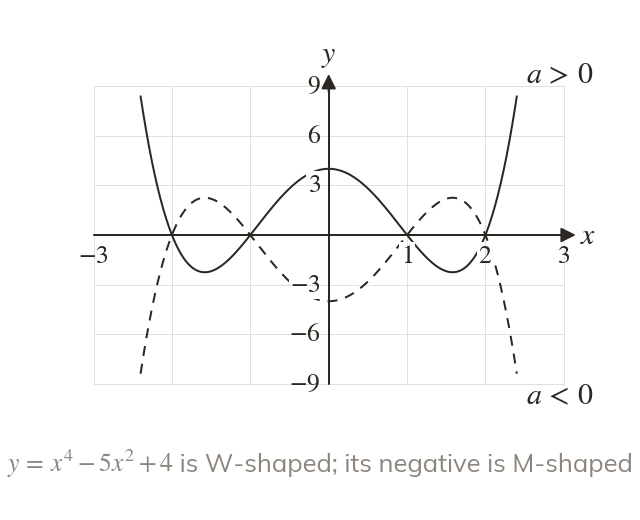
W or M
When both ends of a quartic point up, so it is W-shaped. When both ends point down, so it is M-shaped.
A quartic is read the same way as a cubic: a gives the shape and each factor gives a root. Its two ends point the same way, so it is W-shaped or M-shaped; next lesson the reciprocal graphs bring a new feature, the asymptote.
Work down the page at your own pace. Write every answer in your book first, then click to check it.
Read each card, then follow the worked examples one step at a time.

When both ends of a quartic point up, so it is W-shaped. When both ends point down, so it is M-shaped.
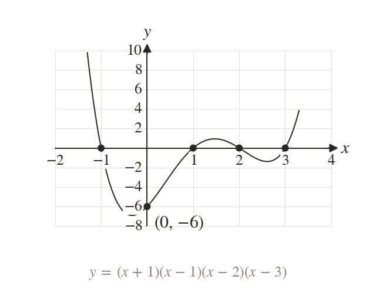
meets the x-axis at and
At it is
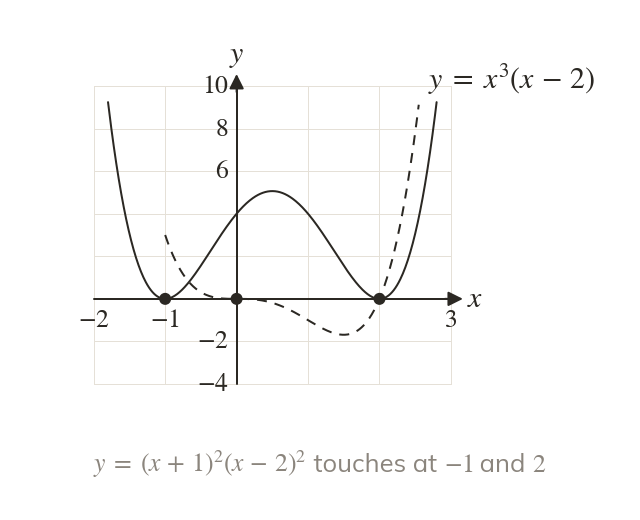
A double root touches the axis at A triple root flattens and crosses there.
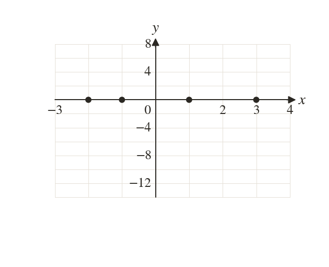
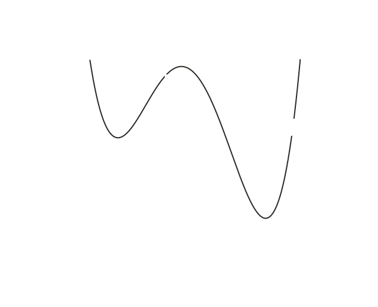
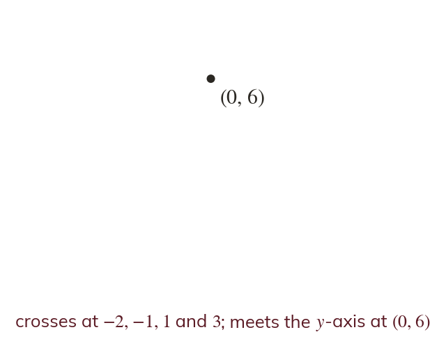
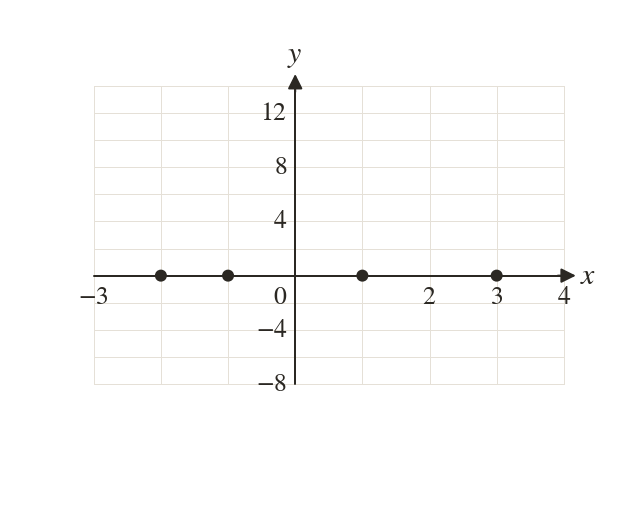
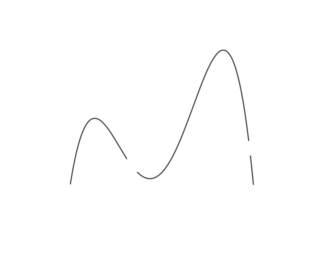
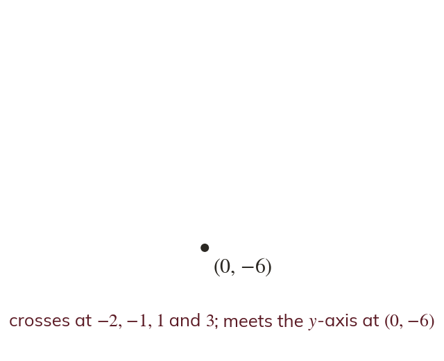
Pick an answer. If it's wrong, the feedback tells you which mistake it was.
Write the blanks in your book first, then tap each one to check.
Read each card, then follow the worked examples one step at a time.
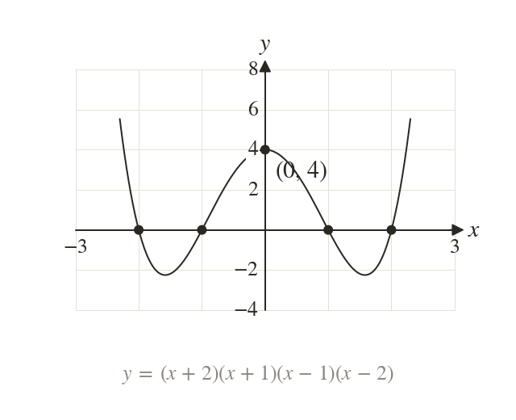
A quartic crossing at and is It meets the y-axis at so here
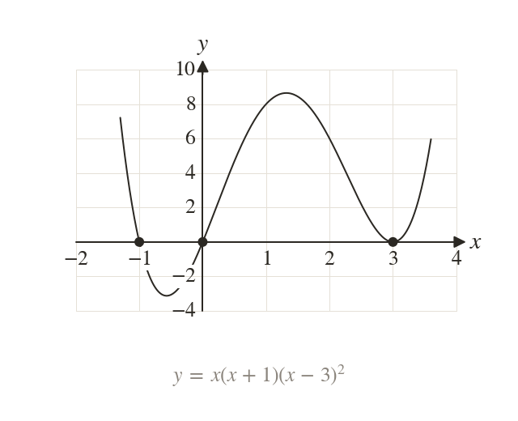
Where the graph touches the axis, its factor is squared. Crossing at and and touching at gives
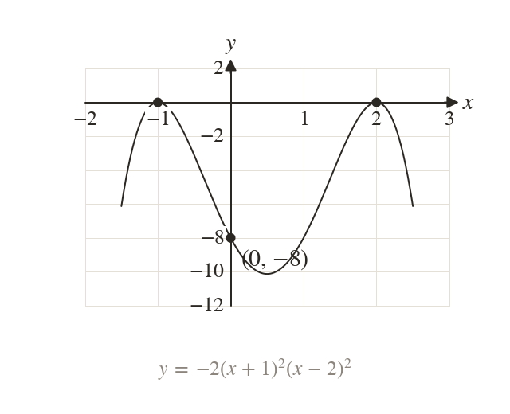
Touching at and gives
Through so and the graph is M-shaped.
Pick an answer. If it's wrong, the feedback tells you which mistake it was.
Write the blanks in your book first, then tap each one to check.
Finished? Next lesson: 4.3 Reciprocal Graphs.
For each skill, tap the one that is true for you today. Your Revise pages start with anything you mark Not yet.
Your ratings are saved on this device only.
Log in, then search for a code to practise that skill.